挑戦を応援する
お知らせ
NEWS
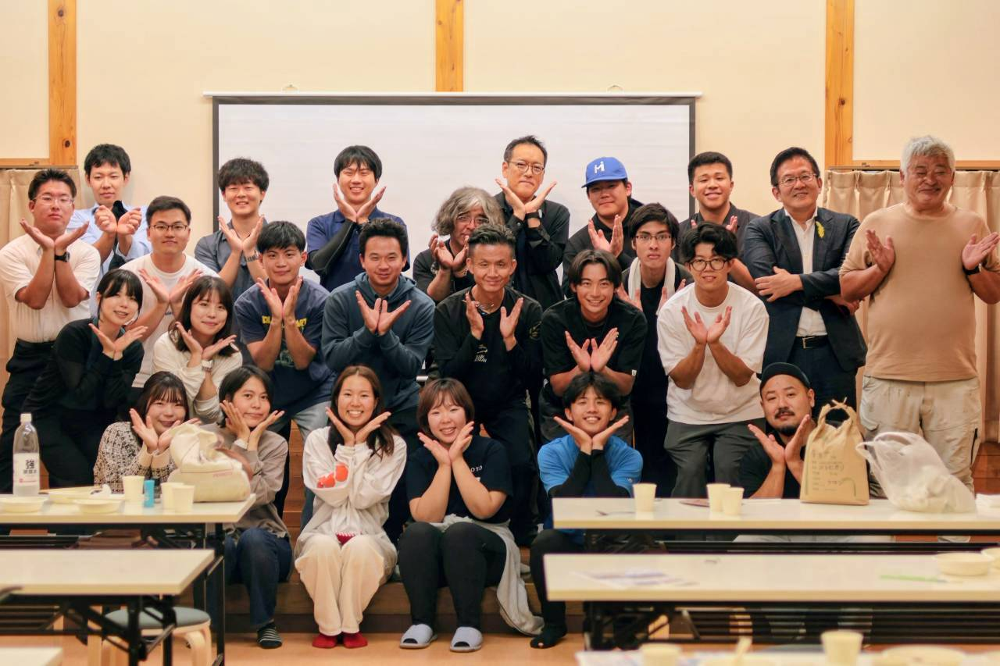
第26回 若衆会を、輪島市南志見で開きました
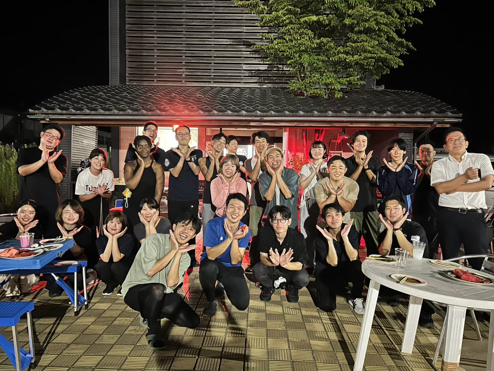
第25回 若衆会は、奥能登ブリッジでBBQ
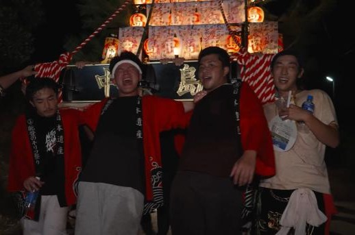
あばれ祭で、メンバー34人がキリコを担ぎました
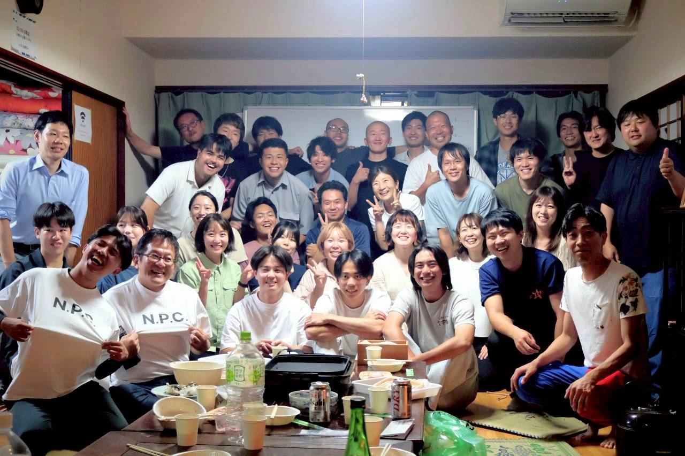
第24回 若衆会を、ゲストハウス黒島で開きました
これまでの活動は Instagram で見られます
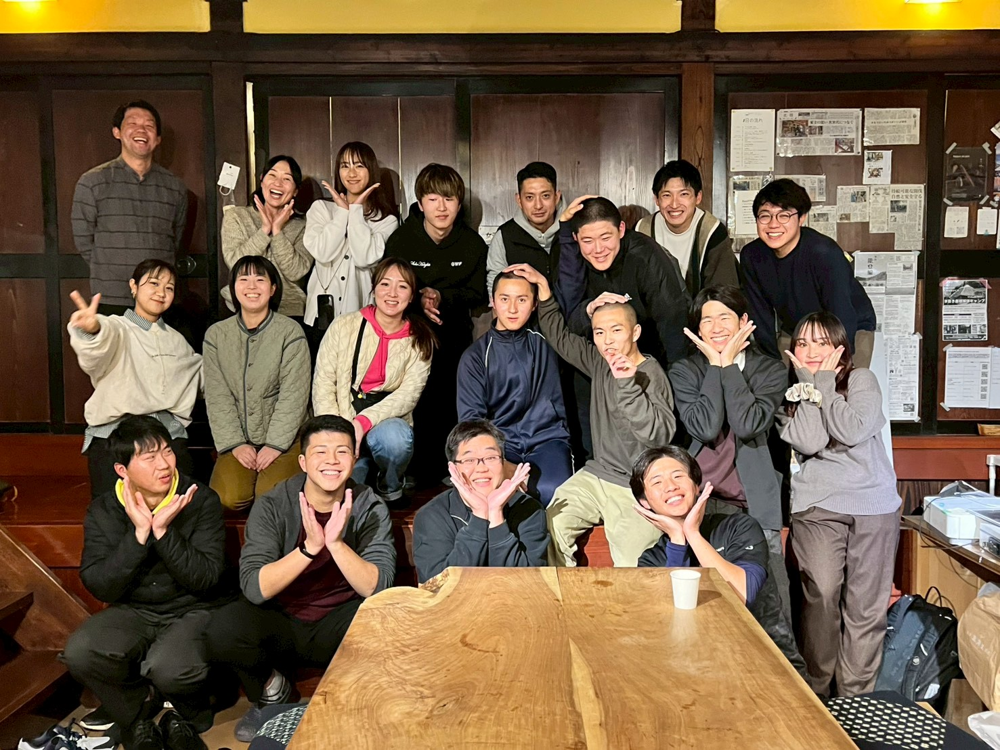
若者の能登での挑戦を、応援する。
2025.3 START
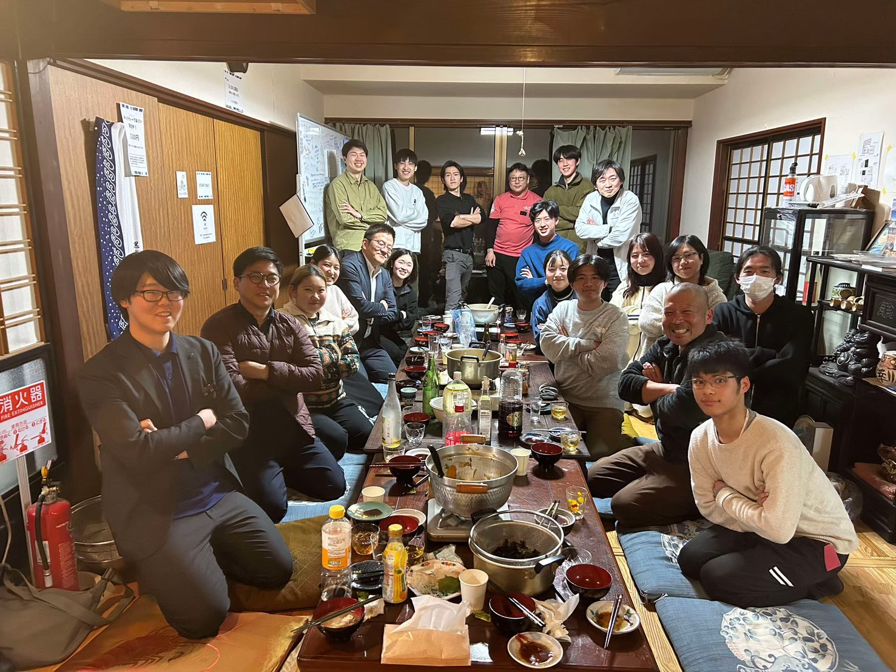
能登の若者がつながる
コミュニティ
能登に生まれ育った人、
移り住んだ人、県外から通う人が
市町や仕事の垣根を越えて集まる会。
「能登を世界で一番
ワクワクが生まれる場所に」を
目指しています。
会のはじまり
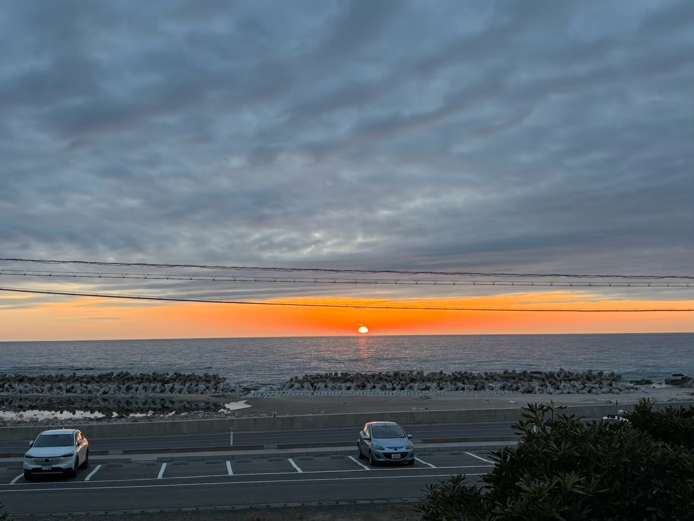
2024年1月1日の能登半島地震のあと、能登では復興やまちづくりの話し合いが続いています。その場の多くは40代より上の世代が中心で、若い世代の声はほとんどありませんでした。そのことへの違和感と悔しさが、この会の原点です。
2025年3月、輪島市のゲストハウス黒島で、第1回の若衆会を開きました。いまはメンバーそれぞれが、仮設住宅での移動販売、大学生の受け入れ、森づくりや地域行事への参加など、自分のフィールドで復興と地域づくりに関わっています。
これまでの企画
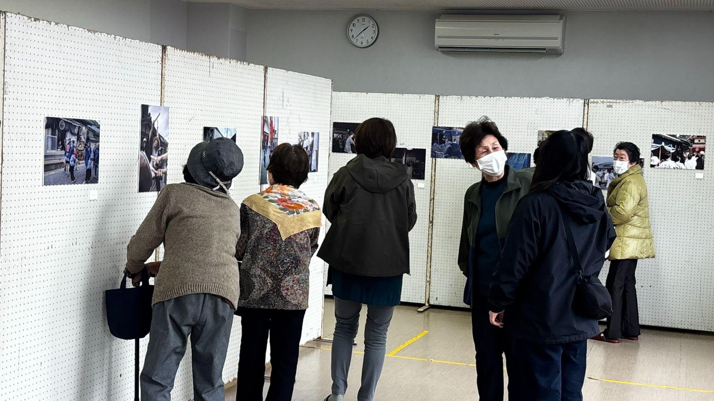
2026.03 / 輪島市黒島
黒島の祭りを、写真でふりかえる
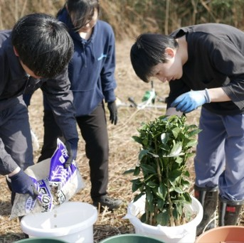
2026.03 / 七尾市能登島
能登島に、柚子を植える
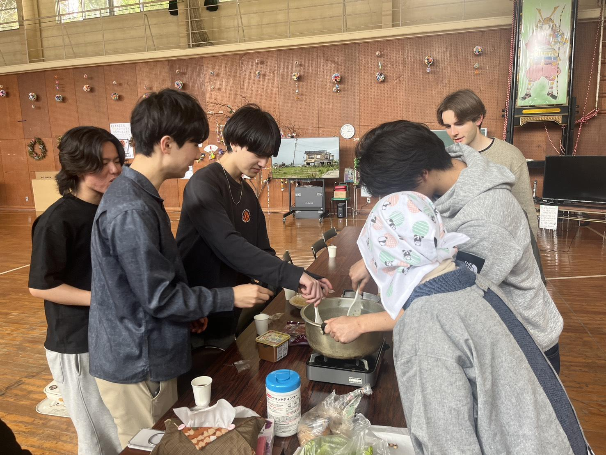
2026.03 / 珠洲市上黒丸
ばあちゃんの里山料理教室
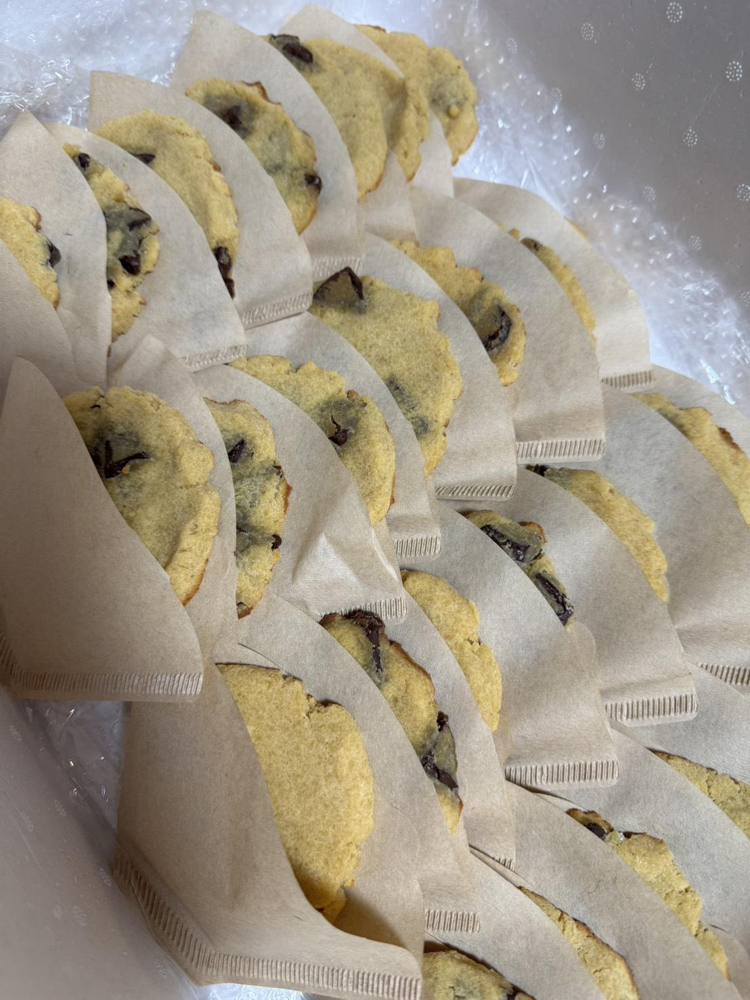
2026.03 / 能登町
豆腐屋のおからで、クッキーカフェ
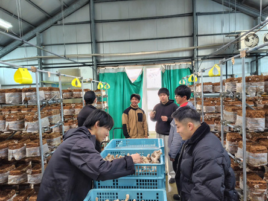
2026.03 / 能登町寺分
しいたけの生産現場に入る
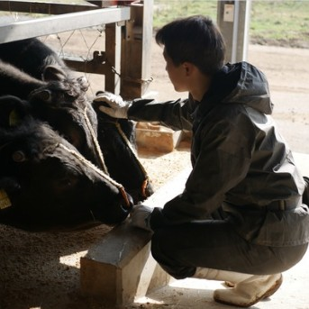
制作中
能登に生きる人を、1冊にする
活動の場所
印を押すと、そこでの活動が出ます
能登の外では、女川（2025年12月）と神戸（2026年1月）にも学びに行きました。
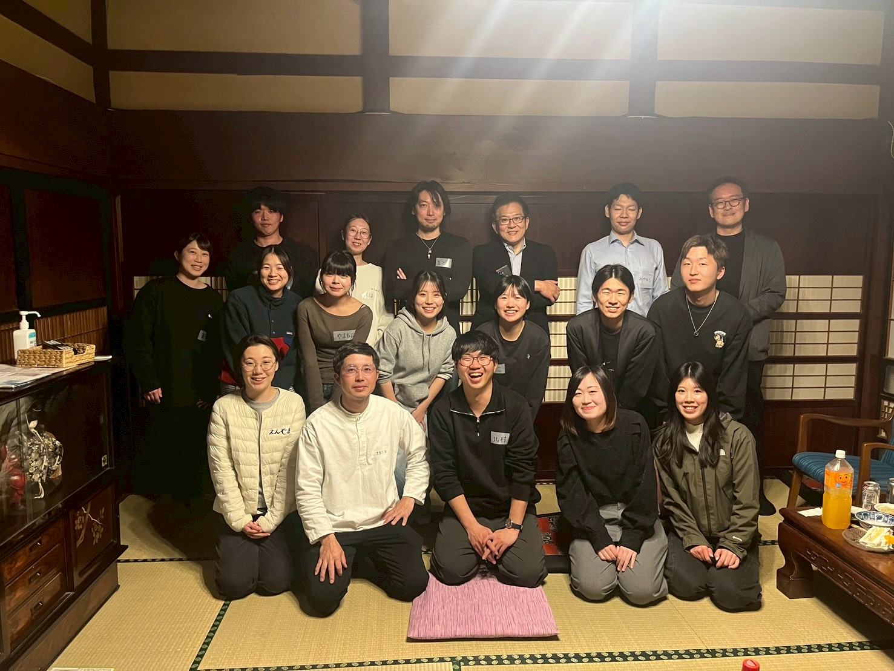
会には、若者の挑戦を応援する先輩世代の「若頭」も参加しています。県の副知事や能登官民連携復興センターの職員、能登の経営者など、立場のちがう大人が、若衆会で同じテーブルを囲み、相談に乗ってくれています。
大人の方々は、僕らが思っている以上に、若者の活動に興味を持ってくれています。代表・古矢拓夢（2026年 年頭のあいさつより）
応援のお願い
若衆の活動を、応援してください！
寄付金の使い道
皆さまからいただいたご寄付は、能登の未来を担う若者たちを支え、能登若衆の会の活動や運営を継続・発展させるため、以下の用途を中心に活用させていただきます。
01若者が主体となる
活動・企画の推進
02県内外の若者の
参加・交流の促進
03会の運営および
活動基盤の充実
その他、能登の地域づくりや若者の挑戦を支えるために必要な経費に活用させていただきます。
振込先
【口座は会で確かめてから載せます】
銀行名・支店名・口座の種類
口座番号・口座名義
いただいた寄付の使い道は、本ホームページにてご報告します。
これから
- それぞれが活動するフィールドで、若者を中心としたコミュニティをつくる
- 能登で活動する若者の「話題」を増やす
- この会を続けることで、これから先もたくさんの化学反応を起こし続ける
- それぞれがワクワクすることを「共有」し「協力」する
MEDIA
団体概要・お問い合わせ
| 名称 | 能登若衆の会 |
|---|---|
| 設立 | 2025年3月 |
| 代表 | 古矢拓夢 |
| 会員数 | 134人（2026年7月時点。うち20代が118人） |
| 主な活動 | 若衆会の開催（年22回ほど）／若者の企画づくりの応援／祭りや地域行事への参加／県外の若者の受け入れ／被災地との交流・視察 |